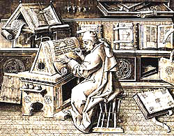

El latín
Español 455
Joseph Casillas
Primavera 2014
Etapas en la historia del latín
Período preclásico (III aC)
Período clásico (100-14 aC)
Perído posclásico (14 aC-200 dC)
Período tardío (200 dC-600 dC)
Período medieval (s. VII-XIII)
Renacimiento (siglos XIV-XVI)
Período contemporáneo
Período preclásico (III aC)
Traducción al latín de la Odisea de Homero (Livio Andrónico)
Influencia del griego
Roma es el poder dominante en la Península
Período clásico (100-14 aC)
Auge de la literatura romana.
Obras de los autores más brillantes de la literatura latina:
Cicerón
Salustio
Catulo
Virgilio
Horacio
Ovidio
Consolidación del poder romano en la cuenca del Mediterráneo.
Perído posclásico (14 aC-200 dC)
Propagación de la lengua latina por Europa
Declive de la literatura latina.
Situación de diglosia.
Período tardío: (200 dC-600 dC)
Dos lenguas: latín tardío y protorromance.
Heterogeneidad del latín.
Muchas variantes
presencia de lenguas indígenas
la fecha y grado de romanización
clase social y procedencia geográfica de los colonizadores romanos
contacto con pueblos invasores
Período medieval (s. VII-XIII)

Siguen coexistiendo dos variedades de la lengua (los hablantes inconscientes de ello)
una viva, dinámica y hablada
otra artificial, estática y escrita
La práctica de redactar todos los documentos en latín deja de ser factible.
Aparecen documentos en romance.
Renacimiento (siglos XIV-XVI)
Al haber documentos en vernáculo, el latín se convierte en la lengua franca de los diplomáticos y estudiosos.
Relegado al plano religioso.
Se intentan recuperar algunas de las obras y el vocabulario clásico.
Período contemporáneo
Se deja de usar el latín como lengua de enseñanza en las universidades (siglo XIX).
Lenguas vernáculas en el culto (siglo XX)
Cronología
Fonología
Vocales
Diptongos
Consonantes
Acentuación
Vocales
El latín contaba con las mismas vocales que tenemos en el español actual
Vocales (2)
El latín contaba con las mismas vocales que tenemos en el español actual
Además había vocales largas (lengua de “cantidad”)
¿Cómo sabemos que la duración era un rasgo fonémico?
Pares mínimos
levis [le:wis] ‘suave’ vs levis [lewis] ‘leve’
os [o:s] ‘boca’ vs os [os] ‘hueso’
Semivocales/semiconsonantes: [j] y [w] (como [i̯], [u̯])
3 Diptongos: /oj/, /aj/, /aw/
Consonantes
No hay:
africadas
fricativas sonoras
palatales
Hay: geminadas
ferum ‘salvaje’ vs. ferrum ‘hierro’
Consonantes (2)
Otrografía
El latín es fonémico, con algunas excepciones:
hay que marcar las vocales largas utlizando el macrón:
las geminadas siempre se escriben con dos consonantes
‘c’ siempre es /k/, ‘cera’ [ke:ɾa]
‘g’ siempre es /g/, ‘genus’ [genus]
‘v’ se pronuncia [w], ‘vacca’ [wakka]
‘c’/‘q’/‘g’ + ‘ui’ = [kwi]/[gwi]
‘i’ en posición inicial es /j/, ‘iustus’ [ʝustus]
‘ɶ’ y ‘oe’ son /oj/
‘ɶ’ y ‘ae’ son /aj/
‘au’ es /aw/
Acentuación
El acento prosódico no es distintivo como en español:
término, termino, terminó
No hay palabras agudas
Sólo llanas y esdrújulas (la mayoría llana)
Las palabras bisilábicas = llanas
Las palabras trisilábilcas son esdrújulas al menos que…
la penúltima sílaba tenga una vocal larga = llana
la penúltima sílaba tenga un diptongo = llana
la penúltima sílaba tenga coda = llana
Muestra textual
Actividad
¿Cómo se transcriben?
Actividad (2)
Referencias
Pharies, D. A. (2010). Breve historia de la lengua española: Spanish edition. University of Chicago Press.
Colina, S. (2013). Spanish 455: clase notes. University of Arizona.